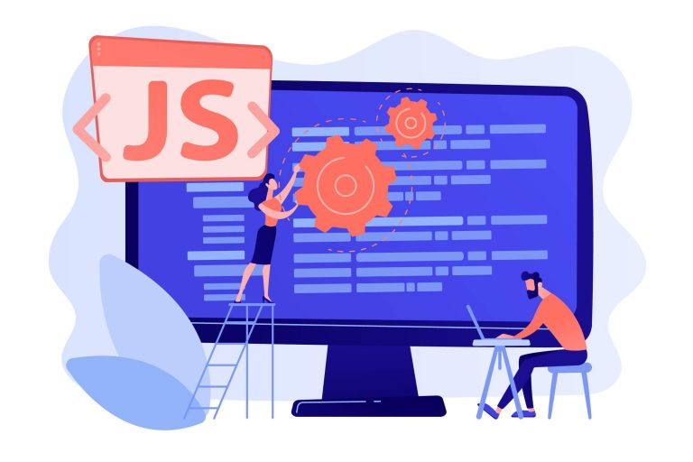

JavaScript : o que é e para que serve?
O JavaScript é uma das linguagens mais populares no desenvolvimento web. Veja quais são as aplicações e os recursos que ele pode agregar ao seu website.
O JavaScript é uma linguagem muito versátil. Por isso, os desenvolvedores a escolhem como uma de suas linguagens preferidas na hora de desenvolver aplicações web. A pesquisa SlashData de 2020 mostrou que o JavaScript é a linguagem de programação mais popular entre os desenvolvedores. Ele funciona como uma extensão do código HTML, sendo ideal para quem decide entrar no mundo do desenvolvimento web e quer aprender as bases da programação. Com o JavaScript e um editor de texto, você pode criar seu primeiro código e dizer “Olá, mundo” no seu navegador. Neste artigo, você vai aprender o que é JavaScript e como ele pode ajudá-lo a romper as barreiras do aprendizado sobre programação, para que você possa começar sua carreira como desenvolvedor web ou agregar valor ao seu site
O que é JavaScript?
De modo geral, o JavaScript é uma linguagem que suporta a programação orientada a objetos. Ainda que não possua várias características desta orientação nativamente, é possível realizar algumas emulações. O JavaScript surgiu com o crescimento da internet no início dos anos 90. A empresa Netscape sentiu a necessidade de melhorar a interação de seus usuários com as páginas do navegador, que levava o mesmo nome. Então, criou o LiveScript: uma linguagem simples, que permitia a execução de scripts contidos no próprio software. Esta linguagem rapidamente foi alcançando mais espaço no setor de desenvolvimento de aplicações. Mais tarde, a Netscape fez um acordo com a Sun Microsystems (comprada pela Oracle, em 2010) para impulsionar o uso do LiveScript. A gigante Microsoft também adaptou seu navegador, Internet Explorer, de tal forma que ele passou a suportar este script, criando sua própria versão, JScript, o que gerou algumas controvérsias no mundo do desenvolvimento web. Por esta razão, os dirigentes da Netscape decidiram padronizar a linguagem JavaScript e enviaram as especificações ao ECMA (European Computer Manufacturers Association), organização que uniformizou a linguagem de forma totalmente independente de qualquer empresa.
Quais são as aplicações?
O JavaScript é usado, principalmente, para aplicativos, software, servidores e controles de hardware integrados. Com ele, é possível:
O JavaScript tem muitos usos, que vão além de suas funções tradicionais na internet. Ele alimenta televisores inteligentes, funciona com a Internet das Coisas (IoT), cria aplicativos nativos para iOS e Android e desenvolve aplicativos de desktop para várias plataformas.
Qual é a estrutura básica de um JavaScript?
É muito importante recordar que o JavaScript não é o mesmo que Java, pois, sua sintaxe é diferente e necessita de um compilador para que o navegador possa interpretá-lo. Por outro lado, o JavaScript tem seu próprio script interpretado por ele mesmo. O script do desenvolvedor será enviado junto ao HTML para o navegador, que, ao lê-lo, fará a diferenciação do código HTML por meio da tag script. A sintaxe do JavaScript é similar às outras linguagens de programação, como Java e C. Eles compartilham a característica de programação orientada a objetos. Além disso, variáveis, condições, acordos, funções e ciclos são iguais.
O que preciso saber para aprender?
Para dar seus primeiros passos no JavaScript, não é preciso ter aprendido previamente sobre programação, mas você deve ter conhecimentos básicos de informática, além de compreender códigos HTML e CSS. Antes de tudo, você precisa aprender a pensar como um desenvolvedor. Isto é necessário, pois este profissional conhece o que é a sintaxe de programação e sabe como aplicá-la em seu código.
Sintaxe de programação
Do mesmo modo que, ao escrever um texto, você usa um certo conjunto de regras, como vírgulas, pontos e acentos, na programação, também existe uma série de normas que regulam as distintas variáveis. Sem esta sintaxe, os códigos nos quais você tiver trabalhado não funcionarão. Programar é usar linhas de código para solucionar problemas do mundo real. Aprender a programar é oferecer instruções ao computador e aos programas para executar atividades de maneira sequencial e lógica, com o fim de realizar as ações propostas. Por isso, a capacidade analítica é fundamental para o desenvolvedor, seja ele Front-End, Back-end ou Full-Stack. Agora que você já sabe um pouco mais sobre esse assunto, conheça alguns dos termos usados para entender o desenvolvimento web e começar a programar em JavaScript: HTML: o “Hypertext Markup Language” é uma linguagem orientada para o desenvolvimento de sites e aplicações. O início do código HTML é marcado pela tag. CSS: é a abreviação de “Cascading Style Sheets” ou “Folhas de Estilo em Camada”. Sua função é definir a apresentação (aparência) dos elementos no site. PHP: é o acrônimo para “Hypertext Preprocessor”, uma linguagem open source, executada do lado do servidor, que tem como função criar a interação do usuário com o site por meio de formulários, parâmetros URL e links. JavaScript (em resumo): também conhecido por suas iniciais JS, tem a função de agregar interações aos sites e às aplicações web. Por meio de scripts executados no navegador do usuário, JS fornece funções avançadas às aplicações, conectando-se às bibliotecas. É possível encontrá-la no meio do código HTML, por meio da tag script.
Quais são as vantagens e as desvantagens do JavaScript?
Como você, provavelmente, já sabe, todas as linguagens de programação têm pontos fortes e fracos. Com o JS, não é diferente. Porém, com alguns cuidados, é possível conseguir construir scripts mais seguros. Para que você possa conhecer um pouco mais sobre JavaScript, listamos as principais vantagens e desvantagens que você deve considerar!
Vantagens
Desvantagens
Por que é importante aprender JavaScript?
Uma vez que já está instalado em todos os navegadores da web hoje, o JavaScript poupa os novatos da tarefa de configurar um ambiente de desenvolvimento. Os recém-chegados podem simplesmente “começar a codificar”. Além disso, se você sabe programa em JS, faz parte de uma grande comunidade que oferece suporte e conselho, algo essencial na era da internet! JavaScript é uma linguagem de programação de excelente reputação, por isso, ter conhecimento e experiência nela é um diferencial. Você pode atuar como profissional Front-End e criar aplicações móveis, já que a linguagem possui infraestrutura para o desenvolvimento de projetos deste tipo, por meio de tecnologias web. Além disso, o JavaScript é encontrado em quase todas as linhas de desenvolvimento. Uma pesquisa realizada em 2018, pela Universidade de Harvard, mostrou que, até 2025, haverá cerca de 1,4 milhões de vagas de emprego na área da tecnologia, mas apenas 400 mil pessoas serão capazes de programar. De acordo com um relatório divulgado pela Devskiller.com, 70% das empresas pesquisadas desejam contratar um desenvolvedor JavaScript. Ou seja, saber programar em JS pode significar grandes oportunidades para você!
Dicas para avançar seus estudos de JavaScript
Para aprender a programar em JavaScript e outras linguagens de programação, há uma grande variedade de cursos disponíveis na internet. E não podíamos ficar de fora, por isso, o curso Linguagem JavaScript: Do Básico ao Avançado chegou na nossa plataforma da HostGator, o Collabplay. No curso você encontrará dados muito importantes para os desenvolvedores que desejem aprofundar seus conhecimentos em JavaScript. Rodrigo Branas, o instrutor, é desenvolvedor e utiliza a linguagem JS profissionalmente todos os dias, o curso tem mais de 20h de conteúdo, acompanhado de testes e exercícios práticos com resolução.